Dykkecomputer for underarmen
Et studentprosjekt i marin teknikk ved NTNU: en dykkecomputer med stor skjerm, dekompresjonsberegning, lesing av flasketrykk fra trådløse sendere, kompass og logg. Her ligger alt på én side: 3D-modellen, simulatoren, utregningene, koblingsskjemaet, materiallisten og loggen.
Ikke til ekte dykking. Prototype som ikke er validert. Deko-beregningen er testet mot en uavhengig planlegger og fastvaren starter i en emulator, men den har ikke kjørt på maskinvaren, huset er ikke trykktestet og koblingsskjemaet er ikke gjennomgått av en annen person.
Status hvor langt hver del er kommet
| Del | Status | Merknad |
|---|---|---|
| Deko og oksygen (Bühlmann ZHL-16C med gradientfaktorer) | Ferdig og testet | Høyst 1 min avvik fra decotengu på 54 dykk |
| Alarmer, gassplanlegging, sjekk før dykket, dykkeplan | Ferdig og testet | 191 enhetstester, også med minnesjekk |
| Lesing av Pelagic-sendere (38 kHz) | Ferdig i simulator | Tidene i signalet må måles på en ekte sender |
| Simulator og mobilapp | Ferdig og testet | Fire testsuiter kjører uten nettleser |
| Fastvare for ESP32-S3 | Bygget, ikke kjørt på kort | ESP-IDF 5.3.2: 0 advarsler, 746 kB (76 % ledig); starter til app_main i QEMU |
| Skjermsider på enheten | Ikke skrevet | Simulatoren viser hvordan de skal se ut |
| 3D-modeller (STEP) | Rev B3, klar til bestilling | 120 deler med ekte mål; 0 overlapp; 24 monteringssteg sjekket; O-ringspor og skruelast regnet. Se modellen i 3D |
| Testrigg for koblingsbrettet | Klar til print | To plater (210 × 190), skjermstativ, knappetest og våtkopp |
| Fusion-prosjekt med sammenstilling | Rev A, B og B3 | Rev B3: alle 120 deler, 418 g, 0 ekte kollisjoner, gjenger på skruene og hengslede knapper; eldre revisjoner i Arkiv |
| Koblingsskjema | Rev C | Passer til hus rev B3; elektrisk regelsjekk: 0 feil, 5 bevisst ubrukte avbruddspinner; ikke gjennomgått av en annen person |
| Radio gjennom huset | Problem funnet | Aluminium demper 38 kHz med ca. 59 dB; plast-midtring foreslått, må måles |
| Kretskort (PCB) | Rev D ferdig rutet | Hovedkort 4 lag og sensorkort 2 lag, 0 DRC-feil; Gerber, deleliste og plassering for JLCPCB, og .brd/.sch for Fusion. Se kortet |
| Hus og linse | Ikke testet | Håndregnet for 100 m; trenger FEA og trykktest |
3D-modell hus rev B3, 120 deler
Dra for å rotere, scroll eller knip for å zoome. Dra i «Sprenging» for å ta huset fra hverandre, klikk en del for å se hva den er, og klikk en gruppe for å vise bare den.
Revisjonene
Rev B3 bytter ut plassholderne med delenes ekte form og mål, og retter det kontrollene under fant. Huset er nå tegnet slik det skal bestilles.
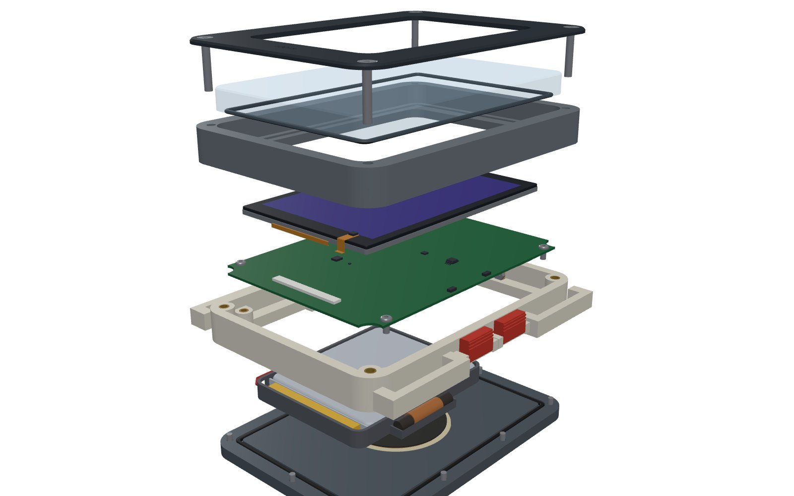
| Del | Rev B2 | Rev B3 |
|---|---|---|
| Skjerm | 61 × 92,4 mm kloss | Bart 3,5" IPS-panel 55,5 × 84,96 × 2,5 mm (ST7796) med bakbelysningsramme og glass |
| Batteri | Kloss | Poselcelle med forseglingskant, kapton-pakket beskyttelseskort og ledninger gjennom et spor i holderen til JST-kontakten |
| O-ringer | Rektangulære klosser | Modellert sammenklemt; sporene regnet etter (se kontrollene) |
| Skruer og innsatser | Glatte | Riflede messinginnsatser; ISO-gjenger på skruene i Fusion |
| Sensorkort | 4 fjærkontakter | 6, som J7 i koblingsskjema rev C |
| Lyssensor | VEML7700 4 × 2,35 mm, litt inn i bildet | VEML6030 2 × 2 mm, helt utenfor bildeområdet |
| Spoler, summer, motor | Klosser og sylindre | Viklinger, lydhull og avrundede kanter |
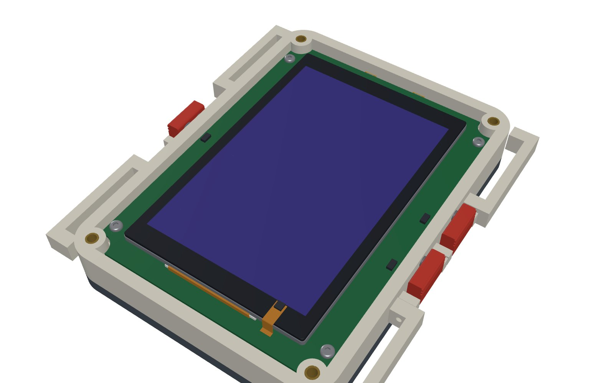
Testrigg for koblingsbrettet
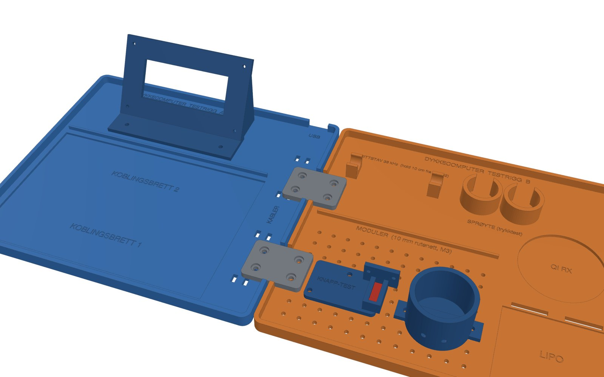
En lett 3D-print som holder prototypen ryddig: plate A med to koblingsbrett, skjermstativ og kabelkanal; plate B med 10 mm rutenett for modulene, lommer for LiPo og Qi-spole, klemmer for sprøyten til trykktesten og for ferrittstaven (minst 10 cm fra ESP32). En knappetest viser om magneten virker gjennom en 3 mm vegg, og en kopp med to skruer tester våtkontaktene. Alt printes uten støtte. Åpne 3D-modellen (sprengbar) · Last ned riggen · Last ned rev B3 (STEP, 120 deler, Fusion-skript og kontroller).
Rev B viste hvor alt skulle festes, men flere deler var bare klosser. I rev B2 er alt som holder, tetter eller kobler noe modellert, slik at huset kan settes sammen av innkjøpte og produserte deler. Gjennomgangen fant fire feil i rev B (se feillisten).
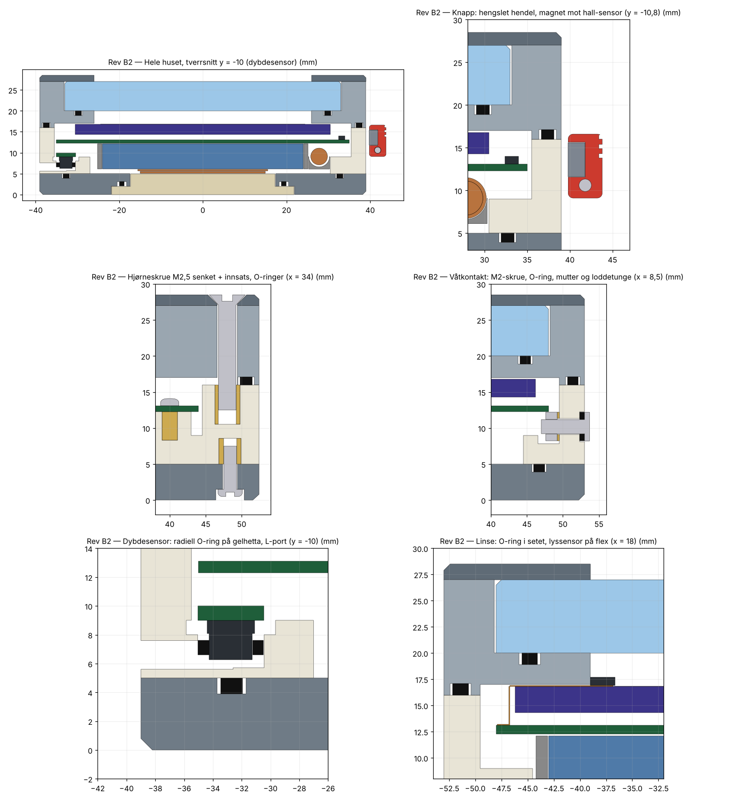
| Del | Rev B | Rev B2 |
|---|---|---|
| Skruer | Sylindre uten hode | M2,5 × 16 senkhode (ISO 10642) flush i bezelen; M2 × 6 og M2 × 4 knapphode (ISO 7380) med sekskanthull; M1,6 × 3; alt i A4 |
| Gjenger i POM | Bare hull | 20 messinginnsatser (4 × M2,5, 14 × M2, 2 × M1,6). Varmepressede innsatser holder dårlig i POM; bruk innpressede, ultralyd eller Helicoil |
| Linse | Lå i setet uten tetning | O-ring i spor i setet; vanntrykket presser glasset ned på den, bezelen klemmer |
| Knapper | Klosser 0,05 mm fra veggen | Spak hengslet på Ø1,5 mm stift i to ører, Ø4 × 2 mm magnet, trykkfjær, 0,8 mm vandring og griperiller; revolute-ledd i Fusion |
| Våtkontakter | Pinne gjennom veggen, ingen tetning | M2 × 6 linsehodeskrue med O-ring under hodet, mutter og loddetunge inne, lomme i flensen |
| Dybdesensorer | Firkant i rund boring (hjørnene stakk 0,03 mm inn) | Firkantsokkel i forsenkningen, rund gelhette med radiell O-ring, lokal forsterkning innover; 4 fjærkontakter til hovedkortet |
| GPS-antenne | 12 mm patch på undersiden | 7 × 2 × 0,8 mm chipantenne (Johanson 1575AT43A0040) på kortkanten mot POM-veggen |
| Lyssensor | På kortet, under skjermen | På en tynn flex på skjermens svarte kant, innenfor vinduet |
| Koblinger | Ikke modellert | Skjerm-FPC brettet rundt enden inn i 0,9 mm FPC-kontakt; batteri i JST-SH; lyssensor-flex loddet på kortet |
| Utseende | Skarpe kanter | Fasede kanter på bezel, linse og bakplate; «100 m» gravert i bezelen; komponentene heter det de er i Fusion |
114 deler, 0 overlapp (eksakt kollisjonssjekk). Masse ca. 420 g i luft, hvorav 110 g er den 7 mm tykke glasslinsen; i vann blir det ca. 200 g. Safir (ca. 5 mm) eller kjemisk herdet glass gjør linsen lettere og tynnere. Last ned rev B2 (STEP, 114 deler, med Fusion-skript).
Huset er delt i tre: toppring med linsekant og bakplate i aluminium, og en midtring i POM-C som tanksignal, Bluetooth og GPS går gjennom. Alt i innmaten er skrudd eller klemt fast, og huset er 28,5 mm høyt (rev A: 30,7 mm).
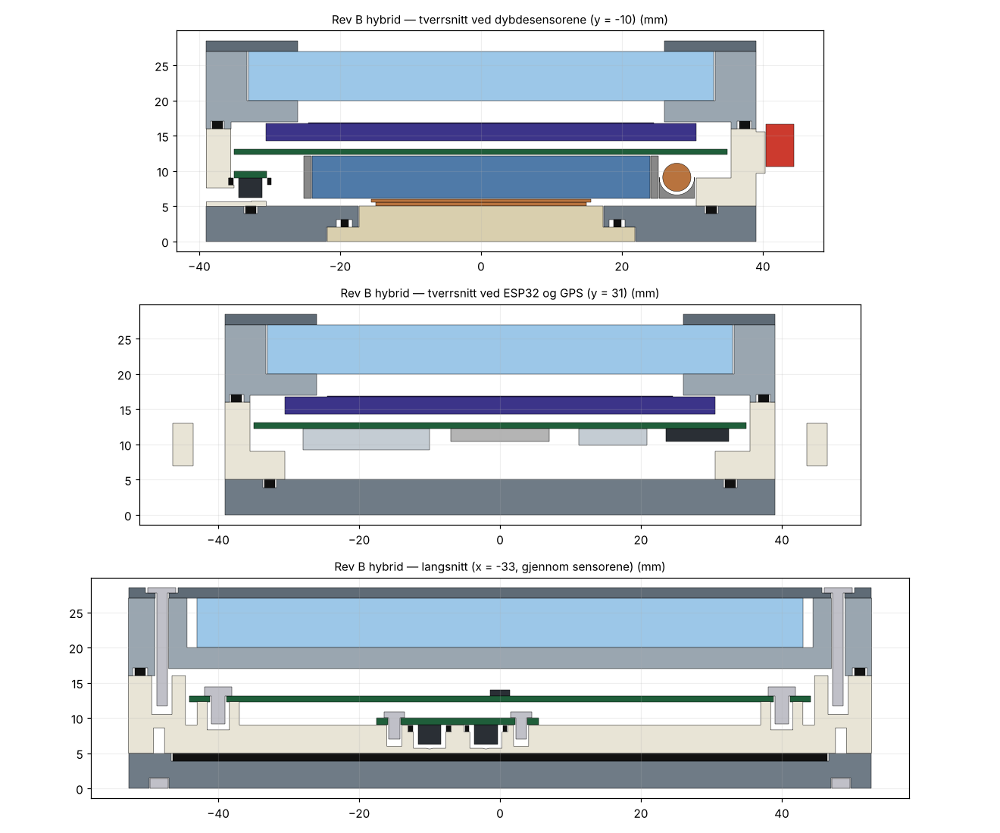
| Del | Slik er den festet |
|---|---|
| Toppring og bezel | 4 × M2,5 × 16 gjennom bezel og toppring inn i messinginnsatser i midtringens hjørnebosser; O-ring i spor i toppringen |
| Bakplate | 10 × M2 × 6 inn i messinginnsatser i POM-flensen; O-ring i spor i bakplaten |
| Kretskort 70 × 96 × 0,8 | 4 × M2 × 4 inn i standoffs fra flensen, utenfor skjermen |
| Skjerm | Klemt mellom linsekanten og fire skumputer på kortet |
| Høye komponenter | ESP32, microSD, GPS med antenne, summer, vibrasjonsmotor og flere IC-er på kortets underside, ved siden av batteriet |
| Batteri 48 × 60 × 6 og mottakerspole | I en printet PA12-holder som klemmes mellom bakplaten og kortet |
| Dybdesensorer | Begge på ett lite kort på flensen, opp-ned i hver sin boring med O-ring; L-formet port ut gjennom POM-veggen; 2 × M1,6 |
| Våtkontakter | A4-pinner gjennom POM-endeveggen (isolert av plasten), fjærkontakter på kortets underside |
| Knapper | Spaker på POM-veggen; TMAG5273 på kortkanten rett innenfor hver magnet |
POM-veggen trenger minst 1,7 mm ved 100 m (spenn 7 mm, 20 MPa) og er 3,5 mm. Batteriet er kortere (48 × 60 mot 50 × 80 mm, ca. 25 % mindre kapasitet), som gir ca. 19 timer dykk med middels lys i stedet for 25. Klokkebrikken PCF85063A i TSSOP-8 er 1,1 mm høy; bruk DFN-utgaven på toppsiden. Last ned rev B (STEP, 75 deler, med Fusion-skript).
Rev A: fire varianter fra ett skript (CadQuery), helt i aluminium, og et Fusion-prosjekt for 3,5"-varianten.
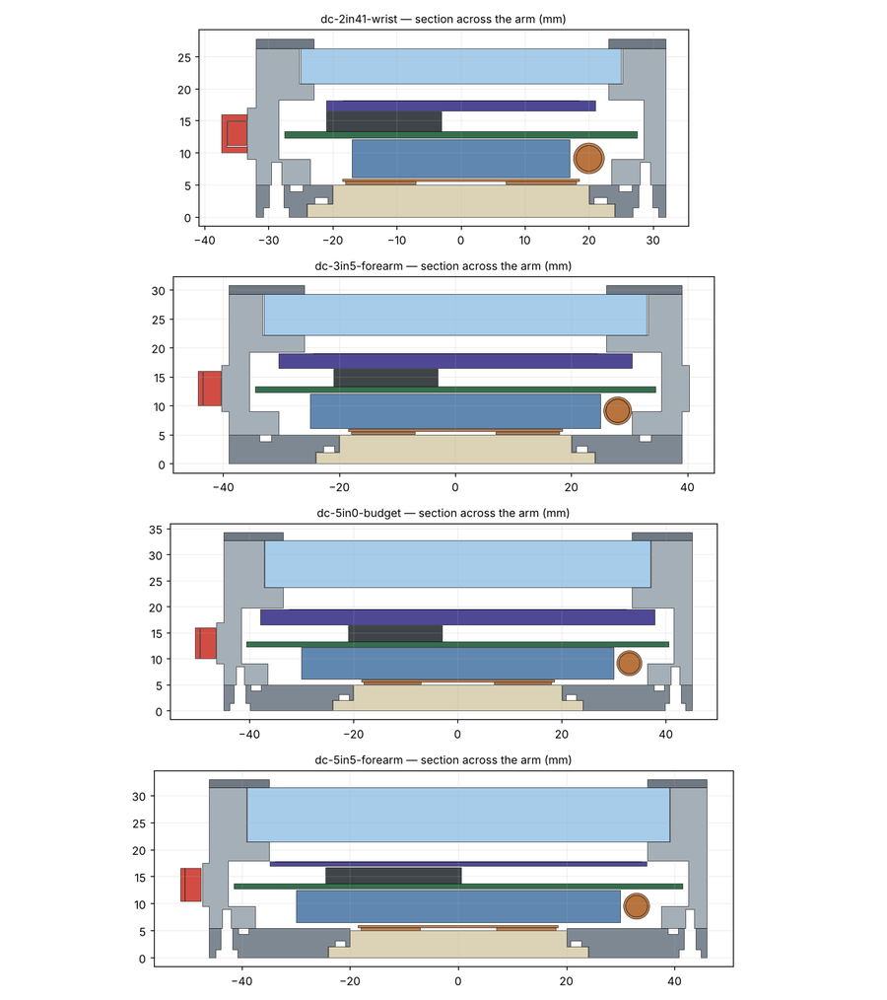
Fire varianter, generert fra ett skript (CadQuery) og dimensjonert for 100 m med herdet glass. Zip-filen har hele sammenstillingen og hver del som STEP, tverrsnitt, beregningstall og skriptet som lager STL og 3MF. I Fusion: File → Open og velg *_assembly.step.
| Variant | Skjerm | Hus B × L × H | Linse | Bakplate | Skruer | Vekt, hus |
|---|---|---|---|---|---|---|
dc-2in41-wrist | 2,41" AMOLED | 64 × 78 × 27,8 mm | 5,5 mm | 5,0 mm | 8 × M2 | 201 g |
dc-3in5-forearm | 3,5" IPS (demobygget) | 78 × 106 × 30,7 mm | 7,0 mm | 5,0 mm | 10 × M2 | 368 g |
dc-5in0-budget | 5,0" IPS 800 × 480 | 90 × 138 × 34,2 mm | 9,0 mm | 5,0 mm | 14 × M2 | 599 g |
dc-5in5-forearm | 5,44" AMOLED | 92 × 150 × 32,9 mm | 10,0 mm | 5,5 mm | 14 × M2 | 691 g |
- Skruene står utenfor O-ringen, og bakplaten har et 5 mm PEEK-vindu over ladespolen, fordi trådløs lading ikke virker gjennom aluminium.
- Linse, linsekant og bakplate er håndregnet med plateformler for 1,5 × 100 m. Rammen er ikke FEA-sjekket, og ingen hus er trykktestet.
- Ingen deler overlapper i noen av variantene (automatisk kollisjonssjekk).
- Ikke gjort ennå: spenningssimulering (FEA) av rammen og trykktest.
Fusion-prosjekt, rev A
3,5"-varianten (demobygget) er bygget som et Fusion-prosjekt med 37 deler, hver lagret som egen design, og en full sammenstilling der alle delene er satt inn som referanser på riktig plass.


- Mapper: 01 Hus (det som lages selv), 02 Innkjøpte komponenter, 03 Elektronikk (kretskort og koblingsskjema), 04 Sammenstilling, 05 Dokumentasjon.
- Hentede komponentmodeller: ESP32-S3-WROOM-1 fra Espressif, og TSSOP/SOIC/LGA/DFN-pakker, Hirose microSD og Murata-summer fra KiCads 3D-bibliotek (CC-BY-SA 4.0). Resten er forenklede modeller med databladmål.
- Materialer: aluminium 6061 (hus), herdet glass (linse), PEEK (ladevindu), acetal (knapper), 316L (våtkontakter), FR4 (kort). Beregnet masse 487 g med bibliotekmaterialer; batteriet er grovt modellert.
- Ledd: huset er låst, hus, elektronikk og kraft er én stiv gruppe, og de tre knappene har glideledd med ±1,5 mm vandring.
- Kollisjonssjekk i Fusion: ingen overlapp mellom delene. De to treffene Fusion finner ligger inne i Espressifs egen modulmodell (0,002 mm³).
- Prosjektet bygges på nytt med skriptet i skjema-zip-filen (
fusion/bygg_dykkecomputer.py), som henter modellene selv.
Simulator og app den ekte fastvaren i nettleseren
Dykkekoden er kompilert til WebAssembly. Dykk på autopilot eller styr selv, se skjermene, profilen med deko-tak og alarmene, og koble til den simulerte telefonen.
Slik tester du simulatoren
- Velg et dykk under Run → Dive, for eksempel «Deco: 40 m, 25 min», og sett farten til 20× eller 60×.
- Bla mellom skjermsidene med UP og DOWN under skjermen. Hold SELECT for menyen: full meny på overflaten, kort dykkemeny under vann.
- Velg «Mistakes» for å se alarmene: for dypt for gassen, for rask oppstigning og brutt deko-tak.
- Skru ned batteriet, huk av «Weak battery in T1» eller øk støyen på senderne for å se varslene og sjekken før dykket.
- I Phone app-panelet: koble til, legg inn utstyr og synk det, lag en dykkeplan og send den til computeren.
- Etter dykket (5 min på overflaten): last ned loggen, eksporter til Subsurface, eller trykk Share for et bilde med profil og kart.
Mobilappen
- Kobler til den ekte dykkecomputeren over Bluetooth: utstyr, dykkeplan, innstillinger, sjekk før dykket, logger, statistikk og fastvareoppdatering.
- Virker i Chrome på Android, Windows, macOS og Linux. iPhone har ikke Bluetooth i nettleseren og trenger en egen app.
- Uten maskinvare: bruk telefonpanelet i simulatoren. Det er den samme appen, koblet til den simulerte computeren.
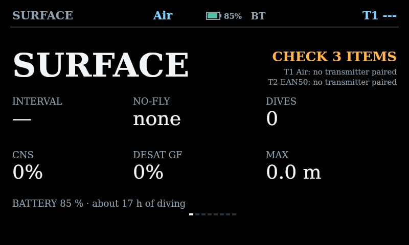

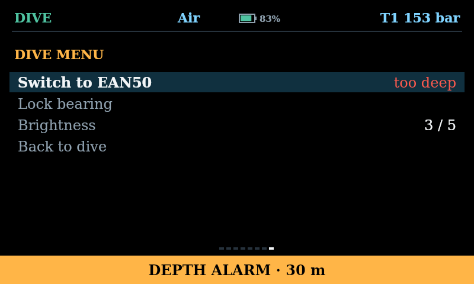
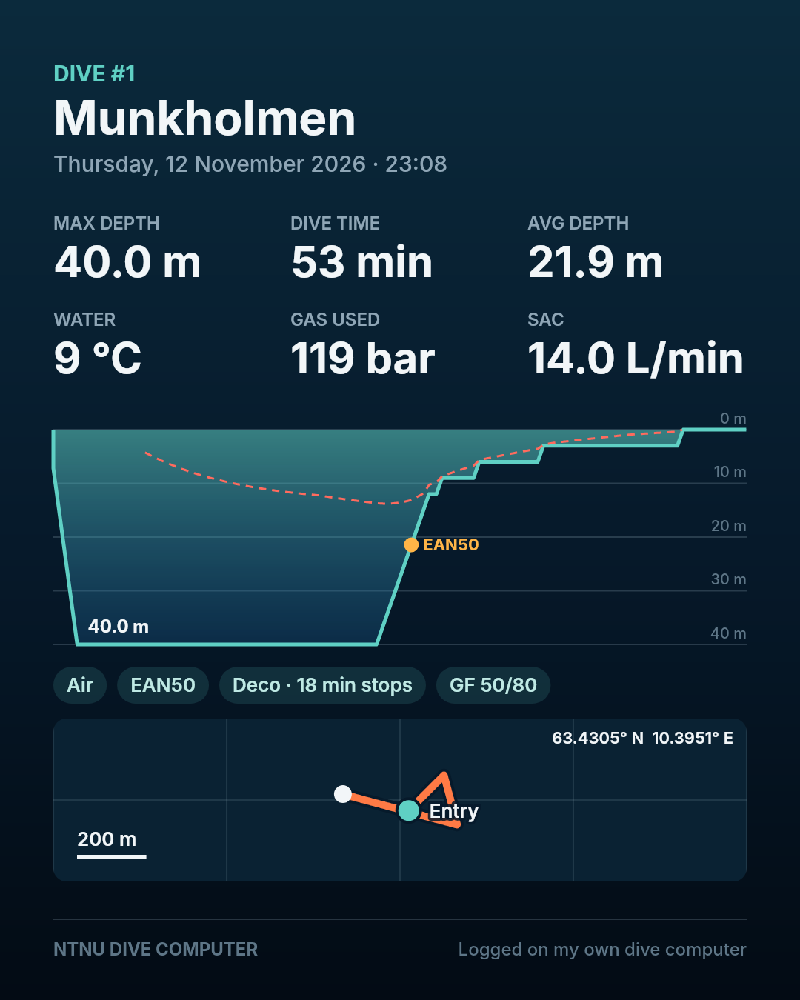
Huset beslutninger, utregninger og kontroller
Hybridhus: toppring med linsekant og bakplate i aluminium, midtring i POM-C som radiosignalene går gjennom. Dimensjonert for 100 m; prototypen i pleksiglass for 60 m.
Prøv selv: demping gjennom husveggen
δ = √(ρ / (π f μ0)), demping ≈ 8,69 · t/δ dB. Plan bølge gjennom plate: et grovt anslag som må måles. Plast leder ikke, så midtringen i POM-C slipper signalet gjennom.
Beslutninger 21.11.2026 GPS, hybridhus, dybde, prototype
Fem valg ble tatt 21.11.2026. Pleksiglass-prototypen er dimensjonert for 60 m; den endelige modellen holder 100 m.
| Spørsmål | Beslutning (21.11.2026) | Hva det betyr |
|---|---|---|
| GPS | Beholdes | Antennen må ligge bak plast: i midtringen, ved en kortkant. Et 18 mm patch får ikke plass stående i en 14 mm høy ring, så bruk en mindre patch (12–15 mm) eller en chip-antenne, og mål fix-tid ute. Lastbryteren slår modulen av under vann. |
| Husmateriale | Hybrid | Toppring med linsekant og bakplate i aluminium, midtring i POM-C. Tanksignal, Bluetooth og GPS går gjennom midtringen. Én O-ring ekstra. |
| Tynnere innmat | Pakke A (28,5 mm) | Høye komponenter på kortets underside ved et kortere batteri, og 0,8 mm kort. Brukt i rev B. Vurdert, men ikke valgt: pakke B (27,5 mm, 5 mm tynt batteri, ca. 17 % mindre kapasitet) og pakke C (25,0 mm, B pluss 4,5 mm safirlinse til ca. 90 USD). De kan tas inn senere uten å endre resten av huset. |
| Dybde, endelig modell | 100 m (prøvetrykk 1,51 MPa) | Glasslinse 7,0 mm, linsekant 3,0 mm, bakplate 5,0 mm som før. |
| Dybde, prototype | 60 m i pleksiglass (prøvetrykk 0,90 MPa) | Se tabellen under. Hele huset er gjennomsiktig for radio og Qi-lading, så prototypen tester også mottakeren, Bluetooth og GPS. |
Prototype i pleksiglass, 60 m
| Del (støpt akryl, tillatt 12 MPa) | Formel | Resultat |
|---|---|---|
| Topplate (er også linse), spenn 71 × 99 mm uten linsekant | t = b √(β p / σ), β = 0,449 | 13,1 mm → 13 mm |
| Bakplate, spenn 61 × 89 mm | β = 0,472 | 11,5 mm → 12 mm |
| Vegg, spenn 10,2 mm | β = 0,75 | 2,4 mm → 4 mm (plass til gjennomgående M3-bolter) |
| Nedbøyning av topplaten midt på | w = α p b⁴ / (E t³), α = 0,077, E = 3000 MPa | ca. 0,3 mm |
| Høyde med innmat etter pakke A | 13 + 12,0 + 12 | ca. 37 mm |
Bruk støpt akryl, ikke ekstrudert, og varmebehandle delene etter fresing. Ikke lim tetningsflatene; klem platene med O-ringer og 8–10 gjennomgående M3-bolter i A4. Vask aldri med sprit eller aceton, som gir sprekker (crazing). Trykktest til 0,90 MPa i 30 min, tre ganger, før den tas i vann.
Kontroller før bestilling overlapp, montering, O-ringer, skruer
| Kontroll | Resultat | Merknad |
|---|---|---|
| Bygg av fastvaren | OK | ESP-IDF 5.3.2, esp32s3: 0 advarsler, 746 kB, 76 % av app-partisjonen ledig. Starter i Espressifs QEMU til app_main og lagringen; QEMU har ikke PSRAM, SD-kort eller skjerm, så resten må testes på kortet |
| Enhetstester og simulator | OK | 191 tester, deko høyst 1 min fra decotengu; simulatoren kjører samme C-kode |
| Elektrisk regelsjekk (rev C) | OK | 0 feil. 5 advarsler: avbruddspinner som ikke brukes (GPS PPS, IMU INT, magnetometer INT, batterimåler ALRT, klokke INT) |
| Overlapp (120 deler) | OK | 0 overlapp, eksakt B-rep |
| Monteringsrekkefølge | OK | 24 steg; hver del trekkes ut langs sin retning uten å treffe noe. Hengselstiftene gikk ikke inn i rev B2 (se feil) |
| O-ringspor | OK | Snor 1,5 i spor 2,2 × 1,1: 27 % klem, 73 % fylling (topp, bunn, linse, Qi-vindu). Dybdesensor 3,0 × 1,0: 20 %. Våtkontakt 2,0 × 0,8: 19 %, 79 % fylling |
| Skruer og innsatser | OK | O-ringene krever ca. 190 N per toppskrue og 50 N per bakskrue. M2,5 A4 tåler 2,4 kN; innpresset M2,5-innsats i POM ca. 400 N (sikkerhetsfaktor 2). Trykk går som trykk mot setet og flensen: 9 MPa mot POM-C (tåler ca. 20) |
| Toleranser | OK | Linse 0–0,4 mm klaring i setet; kort 0,4–0,6 mm per side; Ø1,5-stiftene presses i rømte hull; toppringen styres bare av skruene (±0,15 mm), som O-ringsporet tåler |
| Oppdrift | Info | Ca. 400 g i luft, 237 cm³: ca. 160 g i sjøvann. Linsen alene veier 110 g |
| Lagerstatus på delene | Gjenstår | Sjekk i handlekurven hos LCSC/DigiKey rett før bestilling; spesielt TMAG5273, MS5837-30BA og ESP32-S3-modulen |
Før du bestiller freste husdeler: press en M2,5-innsats i en POM-bit og trekk den ut med en skrue og en bagasjevekt (bør tåle over 400 N), og bygg koblingsbrett-riggen og mål 38 kHz og GPS gjennom POM.
Utregninger: linse, bakplate, O-ringer Roark, 1,5 × 100 m
Plater er regnet som fritt opplagte (Roark), med prøvetrykk 1,5 × 100 m. Tillatt spenning: herdet glass 45 MPa, aluminium 6061-T6 184 MPa, PEEK 35 MPa.
| Del | Formel | Inndata | Resultat | Vurdering |
|---|---|---|---|---|
| Prøvetrykk | p = 1,5 · ρ g h | 100 m sjøvann, faktor 1,5 | 1,51 MPa | OK |
| Linse, herdet glass | σ = β p b² / t² | Vindu 52 × 78 mm, β = 0,485, t = 7,0 mm | σ = 40 MPa (tillatt 45) | OK |
| Linsekant (utkraget) | σ = 6 q a / t² | q = p · 52/2 = 39 N/mm, a = 6 mm, t = 3,0 mm | σ = 157 MPa (tillatt 184) | OK |
| Bakplate, aluminium | σ = β p b² / t² | Spenn 61 × 89 mm, β = 0,472, t = 5,0 mm | σ = 106 MPa (tillatt 184); 3,8 mm ville holdt | OK |
| Ladevindu, PEEK Ø 40 | σ = 3(3+ν)/8 · p r² / t² | ν = 0,38, t = 5,0 mm | σ = 31 MPa (tillatt 35) | OK |
| O-ring bakplate | klem = (d − h)/d; fyll = Asnor/Aspor | Snor 1,5 mm, spor 2,0 × 1,1 mm | Klem 27 % (15–30 %), fyll 80 % (under 85 %) | OK; vurder spor 2,2 mm (fyll 73 %) |
| Bakplateskruer | F = p · A | A innenfor O-ringen 65,4 × 93,4 mm | Trykket gir 9,2 kN, men presser platen mot rammen; skruene bærer bare O-ringen, ca. 50 N hver mot ca. 900 N for M2 A4-70 | OK |
| Oppdrift | B = ρ V g | Ytre volum ca. 0,25 L, masse 487 g | Ca. 230 g negativ i sjøvann | OK |
| Rammen | FEA | Ikke regnet | Åpen | |
| Hele huset | Trykktest 1,5 × 100 m, 30 min, 3 ganger | Ikke gjort | Åpen |
Høyden lag for lag
| Lag | mm |
|---|---|
| Bakplate med PEEK-vindu | 5,0 |
| Qi-spole, ferritt og luft | 1,1 |
| Batteri | 6,0 |
| Luft | 0,2 |
| Kretskort | 1,0 |
| Komponentsone (ESP32 er 3,1) | 3,2 |
| Skjerm | 2,5 |
| Luft | 0,2 |
| Linsekant | 3,0 |
| Linse | 7,0 |
| Bezel | 1,5 |
| Sum | 30,7 |
Valgt: pakke A, høye komponenter på undersiden ved et kortere batteri (−2,0 mm) og 0,8 mm kort (−0,2), som gir 28,5 mm (rev B). Vurdert i tillegg: pakke B med 5 mm batteri (27,5 mm) og pakke C med safirlinse i tillegg (25,0 mm) ble vurdert og kan tas inn senere.
Plast i stedet for aluminium åtte materialer sammenlignet
Et helt plasthus blir for tykt ved 100 m, fordi linsekanten og bakplaten er plater i bøying. Anbefalingen er et hybridhus: toppring og bakplate i aluminium, midtring i frest POM-C. Da slipper radiosignalene gjennom sidene, og huset blir rundt 31 mm.
| Materiale | Tillatt σ (MPa, anslag) | Vegg (mm) | Linsekant (mm) | Flat bakplate (mm) |
|---|---|---|---|---|
| Aluminium 6061-T6, frest | 184 | 2,0 (min.) | 2,8 | 3,8 |
| PEEK, frest | 35 | 2,0 | 6,4 | 8,7 |
| POM-C, frest | 20 | 2,4 | 8,4 | 11,5 |
| SLA-resin (Tough 2000) | 15 | 2,8 | 9,7 | 13,3 |
| MJF PA12, dampglattet | 15 | 2,8 | 9,7 | 13,3 |
| Vakuumstøpt polyuretan | 12 | 3,1 | 10,8 | 14,9 |
| FDM PA-CF | 12 | 3,1 | 10,8 | 14,9 |
| FDM PETG | 8 | 3,8 | 13,3 | 18,2 |
Tillatt spenning er cirka strekkfasthet / 3, for printet plast i svakeste retning. Printet prototype (SLA eller MJF PA12) holder til bassengtest ned til 10 m med 4,2 mm bakplate. Printede deler trenger dampglatting eller vakuumimpregnering, gjengeinnsatser i messing, slipte O-ringflater og trykktest av hver del. Vakuumstøping i silikonform lønner seg først fra 5–20 hus.
Radio og magnetfelt gjennom huset skinndybde
Et lukket aluminiumshus stopper tanksignalet, Bluetooth og GPS. Bare linsen og ladevinduet slipper gjennom, og skjermen dekker nesten hele linsen.
| Signal | Frekvens | Skinndybde i Al 6061 | Demping, 3,5 mm vegg |
|---|---|---|---|
| Eldre tanksender | 5,3 kHz | 1,38 mm | ca. 22 dB |
| Pelagic-sender | 38 kHz | 0,52 mm | ca. 59 dB |
| Suunto Tank POD | 123 kHz | 0,29 mm | over 100 dB |
| Bluetooth, GPS | 1,6–2,4 GHz | under 0,002 mm | stoppet |
Dempingen er et grovt anslag (plan bølge gjennom plate) og må måles. Løsninger: midtring i plast (anbefalt), eller et eget PEEK-vindu under mottakerspolen og ESP32-WROOM-1U med ekstern antenne. GPS beholdes (beslutning 21.11.2026): antennen må ligge bak plastmidtringen.
Elektronikk koblingsskjema, kontroll og strøm
114 komponenter og 89 nett på fire ark, med pinnene fra fastvarens board.h. Last ned .sch (åpnes i Fusion Electronics), PDF, netliste og ERC-rapport i zip-filen.
Endringer i rev C (for hus rev B3)
- GPS-antenne: 18 mm patch → Johanson 1575AT43A0040 chipantenne på kortkanten, med π-tilpasning (L5 0 Ω, C33/C34 ikke montert til den er målt).
- Lyssensor: VEML7700 → VEML6030 på en 4-pols flex (J6) på skjermkanten, med egen avkobling (C35).
- Sensorkortet kobles med 6 fjærkontakter (J7); batteriet med JST-SH (J4).
- Ekstra bulk-kondensatorer C31/C32; tredje hall-sensor TMAG5273D1 (unik adresse).
- Elektrisk regelsjekk (
erc.py): 0 feil; 5 advarsler for avbruddspinner som bevisst ikke er koblet.
Endringer fra rev A
- I2C-pull-up på hovedbussen 4,7 kΩ → 2,2 kΩ (R10, R11).
- Ladestatus fra 5 V-pinne: spenningsdeler R3/R4.
- LDO 500 mA → 1 A (U23).
- Mottakerspolen rett til midtspenning, demping R20 10 kΩ; AC-kobling C27/C28 i forsterkertrinnene.
- Ubrukt ADC-inngang til AC-jord (C29).
- Boost (U24) og GNSS (lastbryter U25) slås av og på av sikkerhets-MCU-en; R33/R34 holder dem av ved oppstart.
- Bakgrunnslys fra batteriet via 15 Ω.
- Summerens gate-motstand 100 kΩ → 4,7 kΩ.
- Hall-brytere DRV5032 → målende hall-sensorer TMAG5273 på I2C (U16–U18).


Kretskort rev D: ferdig rutet
Hovedkortet er 70 × 96 × 0,8 mm med 4 lag: GND-plan og 3V3-plan inni, signaler og GND-fylling ytterst. Det har 120 deler og 0 feil i designregelsjekken. Toppsiden under skjermen har bare deler under 1,0 mm. Høyere deler står i stripene utenfor skjermen eller på undersiden ved siden av batteriet. Det er ikke kobber under antennene. Sensorkortet (4,6 × 23 mm, 2 lag) bærer de to MS5837-sensorene ned i boringene i flensen.
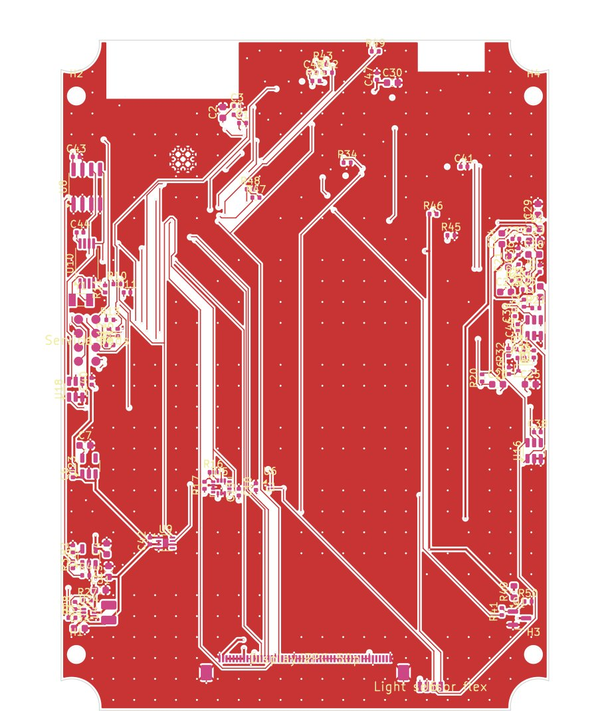
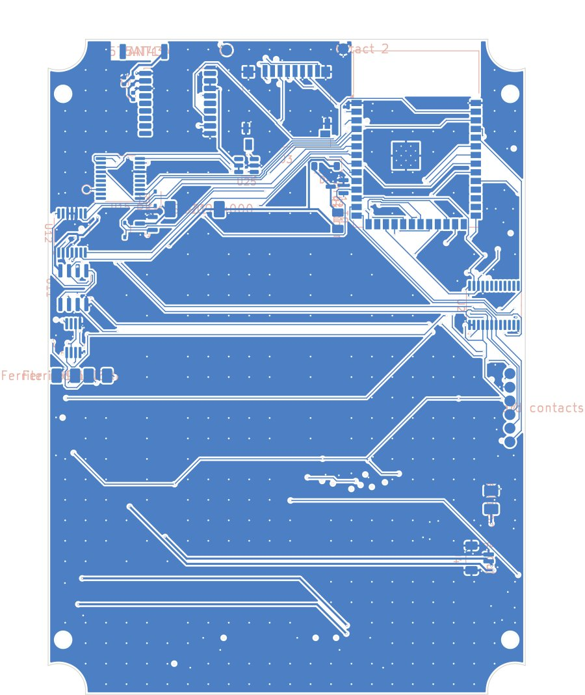
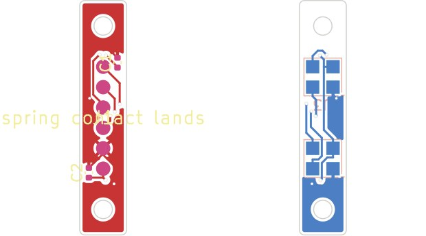
Ved utlegget ble fem ting rettet mot databladene. GNSS er byttet til MAX-M10S, med LNA for passiv antenne. MMC5603 har ingen CAP-pinne. TPS22917 erstatter en 0,4 mm WCSP. Skjermen bruker standard 50-pols FPC med 4-tråds SPI. Det er også lagt til avkobling. Det som må sjekkes ved bestilling står i LES_MEG.md i zip-filen.
Prøv selv: batteritid under dykk
Faste forbrukere: ESP32-S3 25 mA, skjermlogikk 5, sensorer 2 og sikkerhets-MCU 3 mA. Tallene er fra datablader og må måles.
Kontroll av kretsene hver del av skjemaet regnet gjennom
Hver del av koblingsskjemaet er regnet gjennom. Elleve feil eller svakheter ble rettet i rev B. Tre punkter må måles, og to er fortsatt åpne.
| Kontroll | Utregning | Resultat | Status |
|---|---|---|---|
| GPIO-bruk | 33 brukbare pinner; 35–37 tas av PSRAM, 45/46 er oppstartspinner | Alle andre pinner er i bruk. Nye funksjoner må på I2C eller sikkerhets-MCU-en | OK |
| Oppstartspinner | IO0 med pull-up og testpunkt; IO3 (våtkontakt) er JTAG-strap, uskadelig uten eFuse-valg | Starter normalt | OK |
| I2C-adresser, hovedbuss | 0x10 lys, 0x22/0x35/0x78 knapper, 0x30 magnetometer, 0x36 batteri, 0x50 FRAM, 0x51 klokke, 0x6B IMU, 0x70 mux | Ingen kollisjoner; begge MS5837 (0x76) bak mux | OK |
| I2C stigetid, hovedbuss | tr = 0,85 R C, C ≈ 150 pF (11 enheter + spor) | 4,7 kΩ: 0,60 µs, over grensen 0,3 µs ved 400 kHz. 2,2 kΩ: 0,28 µs, synkestrøm 1,3 mA | Rettet i rev B |
| I2C stigetid, dybdebussene | C ≈ 30 pF, 4,7 kΩ | 0,12 µs | OK |
| 3,3 V-regulator | ESP32-S3 trekker opptil ca. 0,5 A i korte topper ved oppstart og radiokalibrering | 500 mA-LDO er for knapp. Byttet til 1 A (TLV75733P). Utfall ca. 0,2 V: virker ned til ca. 3,5 V batteri | Rettet i rev B |
| Ladestrøm | I = 1000 V / RPROG = 1000 / 2 kΩ | 500 mA = 0,25 C for 2000 mAh | OK |
| Ladestatus til ESP32 | STAT driver høyt til VDD = 5 V | 5 V på en 3,3 V-pinne ville skadet ESP32. Spenningsdeler 10k/18k gir 3,2 V. Lading leses sammen med strømretningen fra batterimåleren | Rettet i rev B |
| Boost til analog 5 V | Vut = 0,595 (1 + 732k/100k) | 4,95 V | OK |
| Boost og ADC alltid på | PCM1808 + op-amp ca. 12 mA ved 5 V = ca. 19 mA fra batteriet | Boosten slås nå av og på av sikkerhets-MCU-en (PC0) | Rettet i rev B |
| GNSS alltid på | ATGM336H ca. 25 mA | Lastbryter (TPS22916) styrt av sikkerhets-MCU-en (PC3) | Rettet i rev B |
| Forforsterker | G = (1 + 10k/1k)² = 121 (41,7 dB); båndbredde 10 MHz / 11 = 0,9 MHz per trinn | Fullt utslag på ADC (3,0 Vpp ved 5 V) tilsvarer 25 mVpp på spolen | OK |
| Forforsterker, DC | Uten kondensator forsterkes offset 121 ganger | C27/C28 1 µF i serie med 1 kΩ: DC-forsterkning 1, knekk 160 Hz | Rettet i rev B |
| Spoleinngang | 100 kΩ i serie mot midtspenning gir støy (40 nV/√Hz) og flytende spole | Spolen rett til midtspenning, dempet med 10 kΩ for lav Q | Rettet i rev B |
| Avstemming 38 og 5,3 kHz | C = 1/((2πf)² L); for L = 4,7 mH: 3,7 nF ved 38 kHz, 192 nF ved 5,3 kHz | Én avstemt spole kan ikke ta begge; lav Q og forsterkning i stedet | Må måles |
| Støy | en = 8,7 nV/√Hz over 48 kHz = 1,9 µV rms, × 121 = 0,23 mV rms | Over ADC-støyen (12 µV rms), så forforsterkeren setter grensen | OK |
| ADC-klokker | MCLK = 256 · 96 kHz = 24,576 MHz, BCK = 64 fs = 6,144 MHz | PCM1808 slave, I2S; 38 kHz ligger i passbåndet (0,454 fs = 43,6 kHz) | OK |
| Ubrukt ADC-inngang | VINR rett til jord ligger 2,5 V under arbeidspunktet | 1 µF til jord | Rettet i rev B |
| 123 kHz-kanal | BAT54 trenger ca. 0,3 V; terskel 3,3 · 33k/1033k = 105 mV; τ = 100 kΩ · 1 nF = 100 µs | En passiv stav gir neppe 0,3 V på 1 m avstand: trenger et forsterkertrinn | Åpen |
| Bakgrunnslys | I = (Vbat − Vf) / R, Vf ≈ 3,1 V | Fra 3,3 V ga 3,3 V − 3,1 V for lite marg. Fra batteriet via 15 Ω: 33–73 mA; fastvaren justerer PWM etter batterispenningen | Rettet i rev B |
| Summer, gate | τ = R Ciss ≈ 100 kΩ · 0,6 nF = 60 µs mot 125 µs halvperiode ved 4 kHz | For trege flanker. 4,7 kΩ gir 2,8 µs | Rettet i rev B |
| Summer, drift | PKMCS0909E er en passiv piezo, resonans 4 kHz | Må drives med 4 kHz PWM, ikke av/på. Lydnivået under vann må prøves | Må måles |
| Vibrasjonsmotor | Motor 3 V, ca. 80 mA, fra 4,2 V | Maks 70 % PWM; diode 1N4148W tåler startstrømmen | OK |
| Knapper (hall) | B = Br/2 · [(L+z)/√(R²+(L+z)²) − z/√(R²+z²)], N52 6 × 3 mm | 39 mT inne (z = 6 mm), 16 mT ute (z = 9 mm): en hall-bryter med terskel på få mT står alltid på. Byttet til TMAG5273 på I2C med terskel i fastvaren og INT til knappepinnen | Rettet i rev B |
| Våtkontakter | Berøringskanal 3, 1 kΩ i serie | Vann mellom pinnene gir stor kapasitansendring | Må måles |
| EN-forsinkelse | τ = 10 kΩ · 1 µF | 10 ms, som Espressif anbefaler | OK |
| Sikkerhets-MCU på dybdebuss B | Deler bussen med mux-kanal 1 | Fastvaren må slå av mux-kanalen etter hver lesing, så CH32 har bussen alene | OK (fastvare) |
| Lading i kulde | MCP73831 har ikke temperaturinngang | Ikke lad under 0 °C; vurder lader med NTC | Åpen |
Strømbudsjett 79 mA under dykk, 0,09 mA i dvale
| Forbruker (dykk) | Strøm fra batteriet (mA) |
|---|---|
| ESP32-S3, 80 MHz, radio av | 25 |
| Skjermlogikk | 5 |
| Bakgrunnslys, middels | 25 |
| PCM1808 og forforsterker (5 V via boost) | 19 |
| Sensorer (dybde 1 Hz, IMU, kompass, lys, batterimåler) | 2 |
| Sikkerhets-MCU | 3 |
| Sum | ca. 79 |
2000 mAh / 79 mA ≈ 25 timer dykk med middels lys, ca. 16 timer med fullt lys. I dvale: ca. 0,09 mA (ESP32 10 µA, LDO 25 µA, FRAM 27 µA, batterimåler 4 µA, sikkerhets-MCU 10 µA, knapper og resten ca. 15 µA), som tilsvarer over to år; batteriets selvutlading styrer. Tallene er fra datablader og må måles.
Test i Cirkit Designer Arduino-benketest på ESP32-S3
Koblingsbrett-kretsen er bygget i Cirkit Designer med en ESP32-S3 som kjører en Arduino-benketest. Cirkit kan ikke kjøre ESP-IDF-fastvaren, Bluetooth eller I2S, så dykkekoden testes i simulatoren på prosjektsiden.
Åpne kretsen i Cirkit DesignerOffentlig prosjekt, krever innlogging for å simulere benktest.inoSamme skisse kjører på ekte koblingsbrett
| Del av testen | Resultat | Vurdering |
|---|---|---|
| Kretsen | ESP32-S3, knapper på GPIO 39/41/42, piezo på 40, motor via N-MOSFET på 47 (100 Ω, 100 kΩ, frihjulsdiode), LED på 16, I2C på 8/9 med 2,2 kΩ og DS3231, våtkontakt på 3. Cirkit sin egen sjekk fant ingen feil i koblingen | OK |
| Kompilering | 344 647 byte (26 %) flash, 22 296 byte (6 %) RAM | OK |
| Oppstart | Starter og skriver ut I2C-skanningen | OK |
| I2C-skanning | DS3231 svarer på 0x68; de andre adressene mangler fordi Cirkit ikke har de delene | OK |
| Våtkontakt | Berøringskanalen gir 0 i simulatoren | Ikke simulert, må måles |
| Knapper | Simulatoren krever at knappen holdes inne med musa; automatiske trykk ble ikke registrert | Prøv for hånd |
| Vibrasjonsmotor | Motormodellen viser 110 o/min selv med gate lav; koblingen er bekreftet riktig | Trolig feil i motormodellen; sjekk på koblingsbrett |
Innkjøp foreløpig materialliste
Prisene er estimater i USD fra november 2026. Lenkene er søk hos forhandleren, utenom der et varenummer står: sjekk at modulen er 3,3 V og at selgeren har gode vurderinger før du kjøper.
| Del | Trinn | Funksjon | Antall | Sum | Kjøp |
|---|---|---|---|---|---|
| ESP32-S3 DevKitC-1 N16R8 | 1 | Prosessor og Bluetooth | 1 | $10.00 | AliExpress |
| 3,5" SPI-skjerm ST7796 | 1 | Skjerm | 1 | $18.99 | AliExpress |
| MS5837-30BA breakout | 1 | Dybdesensor A og B | 2 | $40.00 | AliExpress |
| TCA9548A I2C-multiplekser | 1 | Begge dybdesensorene på samme buss | 1 | $1.50 | AliExpress |
| Vibrasjonsmotor-modul | 1 | Hovedalarm | 1 | $1.00 | AliExpress |
| Summer-modul 3,3 V | 1 | Reservealarm | 1 | $0.50 | AliExpress |
| Trykknapper 6 mm | 1 | Tre knapper (byttes til hall-sensorer) | 1 | $0.50 | AliExpress |
| Hall-sensorer + N52-magneter 6×3 | 1 | Forseglede knapper | 1 | $3.00 | AliExpress |
| Våtkontakter, 2 × A4 M3 | 1 | Vekker computeren i vann | 1 | $0.50 | AliExpress |
| Koblingsbrett + ledninger | 1 | Kobling | 1 | $8.00 | AliExpress |
| Kondensator- og motstandssett | 1 | Avkobling og pull-up | 1 | $2.00 | AliExpress |
| PCM1808 ADC-modul | 2 | Sampler mottakerspolen, 96 kHz | 1 | $4.00 | AliExpress |
| Op-amp (MCP6022/TL072) + passive | 2 | Forforsterker for spolen | 1 | $3.00 | AliExpress |
| Ferrittstavantenne | 2 | Tar imot tanksendere | 1 | $1.50 | AliExpress |
| QMI8658 IMU-modul | 3 | Helning til kompasset | 1 | $4.00 | AliExpress |
| MMC5603 magnetometer-modul | 3 | Kompass | 1 | $3.00 | AliExpress |
| VEML7700 lyssensor-modul | 3 | Automatisk lysstyrke | 1 | $1.50 | AliExpress |
| ATGM336H GNSS med antenne | 3 | Posisjon på overflaten | 1 | $6.00 | AliExpress |
| microSD-modul (3,3 V) | 4 | Logger og kart | 1 | $1.00 | AliExpress |
| MAX17048 batterimåler-modul | 4 | Batteriprosent | 1 | $3.00 | AliExpress |
| LiPo 2000 mAh med JST | 4 | Batteri (med beskyttelseskort) | 1 | $7.00 | AliExpress |
| TP4056 lader USB-C | 4 | Lading | 1 | $0.50 | AliExpress |
| Qi mottaker + sender | 4 | Trådløs lading | 1 | $6.00 | AliExpress |
| 3,3 V regulator / boost-modul | 4 | Drift fra batteri | 1 | $1.00 | AliExpress |
| FRAM MB85RC256-modul | 5 | Vevsmetning overlever strømbrudd | 1 | $4.00 | AliExpress |
| RTC-modul | 5 | Klokke | 1 | $2.00 | AliExpress |
| CH32V003 utviklingskort | 5 | Sikkerhets-MCU | 1 | $2.00 | AliExpress |
| 123 kHz-deler (ferritt, diode, LM393) | 5 | Suunto Tank POD-kanal | 1 | $3.00 | AliExpress |
| USB logikkanalysator 8 kanaler | Verktøy | Feilsøking av I2C, SPI og I2S | 1 | $8.00 | AliExpress |
| Totalt | Omtrent 1 370 kr, eller 1 710 kr med 25 % mva. ved import | $146.49 |
Trinn 1: kjerne (dybde, alarmer, knapper). 2: flasketrykk. 3: kompass, GPS og lyssensor. 4: strøm og lagring. 5: senere (FRAM, klokke, sikkerhets-MCU, Suunto-kanal). Bygg og test ett trinn om gangen, slik byggeplanen i kildekoden beskriver.
Hovedlinjene under. Den komplette lista for montering (73 linjer, med alle motstander og kondensatorer) og plasseringsfila ligger i kretskort-zip-fila.
| Ref. | Del | Antall | Sum | Kjøp |
|---|---|---|---|---|
| U1 | ESP32-S3-WROOM-1-N16R8 | 1 | $3.15 | LCSC C2913202 |
| U3, U4 | MS5837-30BA | 2 | $19.54 | LCSC C2887941 |
| U9 | MAX17048G+T10 | 1 | $1.15 | LCSC C2682616 |
| U15 | CH32V003F4P6 | 1 | $0.20 | JLCPCB C5187096 |
| U2 | TCA9548APWR | 1 | $0.50 | LCSC-søk |
| U5 | QMI8658C | 1 | $1.00 | LCSC-søk |
| U6 | MMC5603NJ | 1 | $1.00 | LCSC-søk |
| U7 | VEML6030 (2 × 2 mm, på flex) | 1 | $0.80 | LCSC-søk |
| U8 | MB85RC256V | 1 | $2.00 | LCSC-søk |
| U10 | PCF85063ATT | 1 | $0.50 | LCSC-søk |
| U11 | MCP6022 | 1 | $1.00 | LCSC-søk |
| U12 | PCM1808PWR | 1 | $2.00 | LCSC-søk |
| U13 | LM393 | 1 | $0.10 | LCSC-søk |
| U14 | u-blox MAX-M10S (rev D, innebygd LNA) | 1 | $12.00 | LCSC-søk |
| U16–U18 | TMAG5273 (A1, B1, C1) | 3 | $4.50 | LCSC-søk |
| U21 | MCP73831T-2ACI | 1 | $0.40 | LCSC-søk |
| U23 | TLV75733P (1 A) | 1 | $0.20 | LCSC-søk |
| U24 | TPS61023 | 1 | $0.60 | LCSC-søk |
| U25 | TPS22917DBVR (rev D) | 1 | $0.40 | LCSC-søk |
| J3 | Hirose DM3D-SF microSD | 1 | $0.80 | LCSC-søk |
| Q1–Q3 | AO3400A | 3 | $0.09 | LCSC-søk |
| BZ1 | Murata PKMCS0909E4000 | 1 | $0.40 | LCSC-søk |
| J2 | 3,5" ST7796 IPS-panel | 1 | $15.00 | AliExpress |
| ANT1 | Johanson 1575AT43A0040 GNSS-chipantenne (7 × 2 mm) | 1 | ca. $1.00 | DigiKey |
| J4 | JST-SH 2-pins batterikontakt (BM02B-SRSS-TB) | 1 | $0.10 | LCSC-søk |
| J5 | FPC-kontakt 0,5 mm, maks 1,0 mm høy (pinnetall etter skjermen) | 1 | $0.40 | LCSC-søk |
| — | Kretskort, 4 lag, 5 stk | 1 | $8.00 | JLCPCB |
| Sum for delene over | $70.83 |
Ikke med i summen: motstander og kondensatorer, spoler, batteri, Qi-modul, vibrasjonsmotor, magneter, hus, linse, O-ringer og skruer. Budsjettversjonen med 5"-skjerm er anslått til rundt 1 530 kr med mva. når huset freses på verkstedet.
| Del | Antall | Hvor i huset | Kjøp |
|---|---|---|---|
| Toppring og bezel, aluminium 6061, anodisert | 1 sett | Toppen, linsekant | CNC-tilbud (JLCCNC) |
| Midtring, POM-C | 1 | Vegg, flens, knappeører, stroppører | CNC-tilbud (JLCCNC) |
| Bakplate, aluminium 6061 | 1 | Bunnen | CNC-tilbud (JLCCNC) |
| Ladevindu, PEEK Ø48 mm | 1 | I bakplaten | CNC-tilbud (JLCCNC) |
| Linse, herdet glass 66 × 96 × 7 mm, R5-hjørner | 1 | Toppen | AliExpress (spesialkutt) |
| Batteriholder, PA12 (SLS-print) | 1 | Under kortet | JLC3DP |
| Knappespaker, POM svart | 3 | Sidene | CNC-tilbud |
| M2,5 × 16 senkhodeskrue ISO 10642, A4 | 4 | Bezel og toppring | AliExpress |
| M2 × 6 knapphodeskrue ISO 7380, A4 | 10 | Bakplate | AliExpress |
| M2 × 4 knapphodeskrue ISO 7380, A4 | 4 | Kretskort | AliExpress |
| M1,6 × 3 sylinderskrue, A4 | 2 | Sensorkort | AliExpress |
| M2 × 6 linsehodeskrue A4, M2-mutter A4 og M2-loddetunge | 2 + 2 + 2 | Våtkontakter | AliExpress |
| Gjengeinnsatser messing (M2,5 Ø3,5 × 5,5; M2 Ø3,2 × 4; M1,6 Ø2,2 × 3) | 4 + 14 + 2 | POM-midtringen | AliExpress (eller Helicoil) |
| O-ringsnor NBR 70 1,5 mm (toppring, bakplate, linse, Qi-vindu) og O-ringer 3,0 × 1,0 og 2,0 × 0,8 | 3,5 m + 2 + 2 | Alle tetninger | AliExpress |
| Sylinderstift Ø1,5 × 17 mm, A4 (ISO 2338) | 3 | Knappehengsler | AliExpress |
| Trykkfjær Ø3 mm, ca. 3,5 mm fri lengde, A4 | 3 | Knappene | AliExpress |
| Magnet N52 Ø4 × 2 mm | 3 | Knappene | AliExpress |
| Fjærkontakt (pogo), 2,3 mm | 4 | Hovedkort til sensorkort | AliExpress |
Mål og plassering står i STEP-filene i rev B3-zip-filen. Rektangulære O-ringer lages av snor som skjøtes (vulkaniseres eller limes med cyanoakrylat for gummi); for serie bør de støpes. Lyssensor-flexen bestilles som flex-kretskort (JLCPCB).
Riggen holder koblingsbrett-prototypen ryddig før huset finnes: plate A for koblingsbrettene og skjermen, plate B for moduler, batteri og mottaker, pluss en knappetest (magnet bak 3 mm vegg mot TMAG5273) og en våtkopp for kontaktene. Ca. 280 cm³ plast; begge platene passer på en 220 × 220-skriver. Ekstra innkjøp: ca. 30 M3 selvgjengende skruer eller nylon-avstandsstykker, 8 gummiføtter og borrelåsbånd. Last ned riggen (STL og STEP).
Logg og feil hva som er gjort, og hva som gikk galt
Tidslinje
| Dato | Hva | Resultat |
|---|---|---|
| 22.11.2026 | Kretskort rev D lagt ut og rutet: 4-lags hovedkort 70 × 96 mm og 2-lags sensorkort; fotavtrykk og pinner sjekket mot databladene; .brd/.sch lagt i Fusion | 0 DRC-feil, 0 åpne forbindelser; Gerber, deleliste og plassering klare for JLCPCB |
| 22.11.2026 | Full STEP av rev B3 (19 MB) og de arkiverte zip-filene flyttet til NTNU-disken (diverse/Dykkecomputer/); CAD-viseren kan åpne hele STEP-filen derfra | Sparer ca. 10 MB i GitHub; en liten PHP-fil gir nettleseren lov til å hente filen fra GitHub Pages |
| 22.11.2026 | Rydding i Fusion: mappene er nå 01 Rev B3, 02 Elektronikk (koblingsskjema rev C), 03 Dokumentasjon (prosjektloggen) og 99 Arkiv (Rev A, Rev B hybrid, Rev B2); fem tomme mapper slettet. På siden ligger eldre nedlastinger i arkiv/. Rev B3 komplett i Fusion | 120 av 120 deler, 418 g, 0 ekte kollisjoner (22 treff er modellerte skruegjenger mot glatte innsatshull) |
| 22.11.2026 | Rev B3 lagt inn i Fusion med gjenger på skruene; hele modellen som 3D-visning på siden | 117 av 120 deler satt inn, 408 g; 120 deler kan sprenges i CAD-viseren |
| 22.11.2026 | Fastvaren bygget med ESP-IDF 5.3.2 og startet i QEMU; koblingsskjema rev C; hus rev B3 med ekte mål; testrigg for koblingsbrettet; kontroller før bestilling | 0 advarsler; 0 ERC-feil; 120 deler, 0 overlapp, 24 monteringssteg OK; seks nye feil funnet og rettet |
| 21.11.2026 | Rev B2: alle skruer, innsatser, tetninger, hengsler og kontakter modellert. Rev B lagt inn i Fusion (75 deler, 437 g, kun tre kollisjoner under 0,01 mm³) | 114 deler, 0 overlapp; fire feil funnet og rettet (GPS-antenne, lyssensor, sensorboring, knappeplass) |
| 21.11.2026 | Rev B av huset: hybrid (aluminium og POM-C), alt skrudd fast, 28,5 mm høyt | 75 deler, 0 overlapp; lagt inn i Fusion-prosjektet |
| 21.11.2026 | Benketest i Cirkit Designer (ESP32-S3-simulator) | Skissen kompilerer og starter; I2C svarer; knapper og våtkontakt må prøves for hånd eller på ekte maskinvare |
| 21.11.2026 | Beslutninger: GPS beholdes, hybridhus, 100 m på endelig modell, prototype i pleksiglass for 60 m | Pleksiglass-prototypen dimensjonert; feil og betraktninger samlet i egen del |
| 21.11.2026 | Dykkecomputeren lagt inn som pågående prosjekt under Projects | Logg og simulator på prosjektsiden |
| 20.11.2026 | Gjennomgang av alle kretser, plan for montering, tynnere hus og plasthus | Koblingsskjema rev B med 12 rettelser; funn om radio gjennom aluminium |
| 20.11.2026 | Fusion-prosjekt på TorHub | 37 deler, ekte komponentmodeller, sammenstilling med ledd, kollisjonssjekk og masse |
| 20.11.2026 | Koblingsskjema rev A | 4 ark, 97 komponenter, 81 nett, åpnet som elektronikkdesign i Fusion |
| 15.11.2026 | 3D-modeller av huset | Fire varianter i STEP, dimensjonert for 100 m, kollisjonssjekket |
| 13.11.2026 | Demoen publisert under Diverse | Simulator, mobilapp og kildekode i nettleseren |
| Før 13.11.2026 | Fastvare, deko og simulator | 191 enhetstester, deko innen 1 min av decotengu på 54 dykk, 400 000 tilfeldige protokollforespørsler uten feil |
Fra feillisten
Den største feilen var at et lukket aluminiumshus ikke slipper gjennom tanksignalet, Bluetooth eller GPS. Det førte til hybridhuset med plastmidtring.
Betraktninger og feil vi har støtt på
Alt som har gått galt eller viste seg å være feil underveis, med hva det betyr og hva som er gjort. Den største feilen var at et lukket aluminiumshus ikke slipper gjennom tanksignalet, Bluetooth eller GPS.
| Område | Hva vi fant eller støtte på | Konsekvens | Løsning og status |
|---|---|---|---|
| Elektronikk, GNSS | ATGM336H-5N trenger aktiv antenne eller en egen LNA; med en passiv 7 × 2 mm chipantenne bak plast blir signalet for svakt. | Dårlig eller ingen GPS-posisjon. | Byttet til u-blox MAX-M10S (samme fotavtrykk, innebygd LNA og SAW). Rettet i rev D |
| Elektronikk, sensor | MMC5603NJ har ingen CAP-pinne; skjemaet hadde en SET/RESET-kondensator som ikke finnes, og manglet 2,2 µF på VDD. | Feil kobling og for lite avkobling. | C10 er nå 2,2 µF på VDD. Rettet i rev D |
| Elektronikk, utlegg | Biblioteksfotavtrykket til ESP32-modulen har en 48 mm bred antennesperre; plassert på undersiden pekte antennen mot batteriet, og sperren blokkerte rutingen. | 62 åpne forbindelser i første ruting. | Modulen snudd, egen sperre bare under antennen. Løst |
| Hus og radio | Aluminium demper 38 kHz med ca. 59 dB (skinndybde 0,52 mm), og stopper Bluetooth og GPS helt. Skjermen dekker nesten hele linsen, så linsen er heller ikke noe radiovindu. | Tankmottaker, Bluetooth og GPS ville ikke virket i det lukkede aluminiumshuset. | Hybridhus med plastmidtring vedtatt. Må måles med ekte sender. Planlagt |
| Hus, plast | Et helt plasthus blir for tykt ved 100 m: linsekant 8–11 mm og bakplate 11–15 mm. | Over 3 cm. | Hybrid for 100 m; helt plast bare for 60 m-prototypen. Løst |
| Hus, CAD | Qi-spolen kolliderte med batteriet i første modell. | Overlapp i modellen. | Batterigulvet løftet; kollisjonssjekk viser 0 overlapp. Løst |
| Hus, CAD | Bakplaten må være minst 5 mm for å bære setet til ladevinduet, selv om 3,8 mm holder for trykket. | 1,2 mm ekstra høyde. | Beholdt; forsvinner ikke med hybrid. Løst |
| Hus, montering | Kortet var skåret rundt hjørnebossene og lå løst; batteriet og skjermen var ikke festet. | Ingenting holdt innmaten på plass. | Plan: kort i bossene med M2, skjerm klemt, batteri holdt av bakplaten. Planlagt |
| Hus, høyde | 30,7 mm, mest på grunn av 7 mm glasslinse, 6 mm batteri og 3,2 mm komponentsone. | Tykt på armen. | Pakke A gir 28,5 mm. Planlagt |
| Hus, montering | Våtkontaktpinner gjennom en aluminiumsvegg ville vært kortsluttet til huset. | Våtkontakten ville alltid vist «vått». | Gjennom POM-midtringen i rev B. Løst |
| Hus, montering | Dybdesensorene fikk ikke plass mot innerveggen i rev B: flensen er massiv i den høyden. | Ingen tetning mot porten. | Sensorene ligger opp-ned i boringer i flensen med O-ring og L-formet port. Løst |
| Strøm | Laderens STAT-pinne gir 5 V rett inn på en 3,3 V-pinne. | Kunne ødelagt ESP32. | Spenningsdeler. Rettet i rev B |
| Strøm | LDO på 500 mA for svak for ESP32-toppene på ca. 0,5 A. | Omstart ved oppstart eller radiobruk. | 1 A LDO. Rettet i rev B |
| Strøm | Boost, ADC, forforsterker og GPS sto alltid på (ca. 45 mA). | Tom på et par dager i hvile. | Slås av og på av sikkerhets-MCU-en. Rettet i rev B |
| Strøm | Bakgrunnslys fra 3,3 V hadde bare 0,2 V margin over lysdiodene. | Ujevn lysstyrke. | Fra batteriet via 15 Ω, PWM kompenserer. Rettet i rev B |
| Strøm | Laderen har ingen temperaturinngang. | Lading under 0 °C skader LiPo. | Vurder lader med NTC. Åpen |
| I2C | Pull-up på 4,7 kΩ ga 0,6 µs stigetid med 11 enheter. | Over grensen for 400 kHz. | 2,2 kΩ. Rettet i rev B |
| Tankmottaker | 100 kΩ i serie med spolen og DC-forsterkning 121. | Støy og offset. | Spolen rett til midtspenning, AC-kobling. Rettet i rev B |
| Tankmottaker | Én avstemt spole kan ikke ta både 5,3 og 38 kHz. | Mister én av senderne. | Lav Q og forsterkning. Må måles |
| Tankmottaker | Pause- og burst-tidene til Pelagic er plassholdere fra ett publisert eksempel. | Dekoderen kan bomme på ekte sendere. | Ta opp en ekte sender. Må måles |
| Tankmottaker | 123 kHz-kanalen (Suunto) har ingen forsterker. | For svakt signal til dioden. | Eget forsterkertrinn. Åpen |
| Knapper | N52-magneten gir 16–39 mT ved sensoren; en hall-bryter står alltid på. | Knappene ville alltid vært trykket. | TMAG5273 med terskel i fastvaren. Rettet i rev B |
| Summer | Piezoen i kortversjonen er passiv; fastvaren skrev av/på som for den aktive summermodulen. Gate-motstanden var for treg for 4 kHz. | Ingen eller svak lyd. | 4 kHz PWM i fastvaren; 4,7 kΩ. Rettet i rev B (fastvaren gjenstår) |
| Pinner | 5"-RGB-skjermen trenger 43 pinner; ESP32-S3 har 33. | Passer ikke uten å kutte funksjoner. | 3,5" SPI-skjerm i demoen. Løst |
| Pinner | Alle ledige GPIO er brukt i 3,5"-bygget. | Nye funksjoner får ikke egne pinner. | Nye ting på I2C eller sikkerhets-MCU-en. Løst |
| Koblingsbrett | GPIO 48 er RGB-lysdioden på DevKitC-1 v1.0. | Konflikt med 123 kHz-inngangen. | Bruk GPIO 38 på koblingsbrettet. Løst |
| Innkjøp | MS5837 fra AliExpress kan være forfalsket; mange «HMC5883L»-kort er QMC5883L-kloner. | Feil måling eller feil driver. | MS5837 fra LCSC; MMC5603 i stedet. Løst |
| Fastvare | main/ er bare typesjekket mot stubber, aldri bygget med idf.py. | Små feil ved første bygg. | Første bygg i trinn 1. Åpen |
| Fastvare | Deko bruker ZHL-16C rom 1b; decotengu bruker 1a. | Små avvik i sammenligningen. | Egen 1a-variant for testen; avvik under 1 min. Løst |
| Fusion | Fusion-koblingen feilet først (version negotiation). | Kunne ikke styre Fusion. | Kom tilbake senere; skriptene kjørt derfra. Løst |
| Fusion | Fusion krasjet da mange filer ble lastet opp i én kjøring. | 05 Dokumentasjon ble tom. | Én fil per kjøring neste gang. Planlagt |
| Fusion | Første skjemaopplasting fikk ødelagte æ/ø/å (Windows skrev filen i cp1252). | Feil tekst i skjemaet. | Skrevet som UTF-8 og lastet opp på nytt. Løst |
| Hus, montering | Hengselstiftene i rev B2 kunne ikke settes inn: stroppøret sperret den ene veien og naboknappens øre den andre. | Knappene kunne ikke monteres. | Ø1,6 mm hull gjennom de indre stroppørene; stiften legges mellom ørene og skyves inn. Rettet i rev B3 |
| Hus, tetning | Qi-vinduets O-ring (snor 1,0) lå i et 1,05 mm dypt spor: ingen klem. | Lekkasje gjennom ladevinduet. | Snor 1,5 i spor 2,2 × 1,1 (26 % klem). Rettet i rev B3 |
| Hus, tetning | Dybdesensorens O-ring (snor 0,75) i en 0,8 mm spalte: ingen klem. Våtkontaktens O-ring fylte 102 % av sporet. | Lekkasje, eller O-ring som presses ut. | 3,0 × 1,0 (20 %) og 2,0 × 0,8 i et Ø3,95 × 0,65-spor (79 % fylling). Rettet i rev B3 |
| Hus, tetning | Med 2,2 mm brede spor (for lavere fylling) traff toppringens O-ring hjørneskruene. | O-ringen kunne presses inn i skruehullet. | Skruene flyttet 0,5 mm innover. Rettet i rev B3 |
| Hus, CAD | Skjermen var tegnet 61 × 92,4 mm; det bare panelet er 55,5 × 84,96 mm. | Feil plass til FPC og skumputer. | Ekte mål fra databladet. Rettet i rev B3 |
| Hus, CAD | Sensorkortet hadde 4 fjærkontakter, men J7 i skjemaet har 6 (3V3, GND og to I2C-par). | Én dybdesensor ville ikke vært koblet til. | 6 kontakter. Rettet i rev B3 |
| Fusion | Tre deler (ladevindu, klokke-IC, mottakerspolens vikling) ble ikke satt inn i rev B3-sammenstillingen (InternalValidationError). Kollisjonssjekken viste 27 treff, nesten alle der modellerte skruegjenger møter glatte innsatshull. | Ufullstendig sammenstilling; kollisjonslisten ble misvisende. Første versjon av fill_missing() sjekket ikke hvilket dokument som var åpent og la 88 deler inn i rev A-sammenstillingen. | fill_missing() åpner nå rev B3 selv og stopper ved mer enn 10 manglende deler; rev A ble satt tilbake til forrige versjon med revert_last(). Løst |
| Fastvare | Fastvaren var aldri bygget med ESP-IDF, bare typesjekket mot stubber. | Ukjent om den kompilerte. | Bygget med ESP-IDF 5.3.2 uten advarsler, og startet i QEMU. Løst |
| Hus, radio | GPS-patchantennen i rev B lå på kortets underside og pekte ned mot aluminiumsbakplaten, med jordplanet til kortet mellom seg og himmelen. | GPS ville neppe fått fix. | Chipantenne på kortkanten innenfor POM-veggen, med kobberfri sone. Må måles. Rettet i rev B2 |
| Hus, CAD | Lyssensoren VEML7700 lå på kortet under skjermmodulen og kunne ikke se lys. | Automatisk lysstyrke ville ikke virket. | Flyttet til en flex på skjermens svarte kant innenfor vinduet. VEML6030 (2 × 2 mm) gir mer margin. Rettet i rev B2 |
| Hus, tetning | Dybdesensorboringen (Ø4,6 mm) lå i en flens med bare 5 mm fri bredde: 0,2 mm POM mellom vannet i porten og innsiden. | Lekkasje eller brudd ved trykk. | Lokal forsterkning innover under sensorene (3,7 mm vegg). Rettet i rev B2 |
| Hus, knapper | De to knappene på samme side lå 12,6 mm fra hverandre, men en hengslet spak trenger ca. 17 mm; spakene hadde dessuten bare 0,05 mm klaring mot veggen. | Knappene ville kollidert og ikke kunnet trykkes. | Knappene flyttet til ±8,8 mm og stroppørene litt utover; 0,8 mm vandring. Rettet i rev B2 |
| Hus, tetning | Linsen hadde ingen tetning i rev B, og våtkontaktpinnene ingen O-ring. | Lekkasje. | O-ring i linsesetet og under hver kontaktskrue. Rettet i rev B2 |
| Fusion | Skriptet listet en nyopprettet skymappe (DataFiles.item feilet), og ID-en fra saveAs var midlertidig. | Sammenstillingen stoppet to ganger. | Husker filene lokalt og slår opp etter navn når ID-en ikke virker. Løst |
| Nettsiden | Demoen ble først lagt på V1-siden, som er fryst. | Feil nettsted. | Tilbakestilt; lagt på V2. Løst |
| Nettsiden | Kopier-knapper krasjet etter await, ChromeDriver startet ikke i CI, og bryggesiden hadde en kappløpsfeil. | Feil for besøkende og ustabil CI. | Rettet i egne PR-er (#210, #213, #214). Løst |
Dette gjenstår
- Mål radiogjennomgangen i byggetrinn 2: sender 1 m fra spolen, fritt, bak 3,5 mm aluminium og bak POM-C/akryl, for å bekrefte hybridhuset. Mål også GPS-fix med antennen bak plast.
- Print testriggen og bygg koblingsbrett-demoen, flash fastvaren og kjør benktesten; sjekk at alle I2C-enheter svarer og at knappene virker gjennom veggen.
- Ta opp en ekte Pelagic-sender og juster tidene i mottakeren; mål spolesignalet og velg forsterkning og demping.
- Lag forsterkertrinn for 123 kHz, eller vent med Suunto-kanalen.
- Bestill kretskortene (rev D) hos JLCPCB med montering, etter at en annen person har gått gjennom skjema og kort. Sjekk først FPC-pinnene på skjermpanelet som kjøpes, landmønsteret til antenne og summer, og lagerstatus.
- Trekktest av en innsats i POM, sjekk lagerstatus, og be om tilbud på fresing av toppring, midtring og bakplate etter rev B3.
- Hus: pleksiglass-prototype for 60 m (13/12/4 mm, ca. 37 mm høy) med trykktest til 0,90 MPa; deretter hybridhus med POM-C-midtring og aluminium topp og bunn for 100 m, FEA og trykktest 1,51 MPa.
- Fastvare: skjermsider (LVGL), sikkerhets-MCU, Bluetooth med passord, FRAM- og klokkedrivere, 4 kHz summer, TMAG5273-knapper, styring av boost og GNSS over UART.
- Mål strømforbruket under dykk og erstatt anslaget på 20 timer.